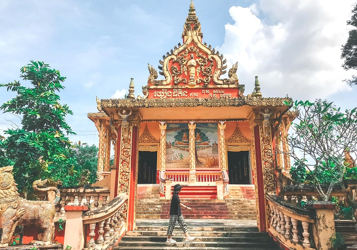
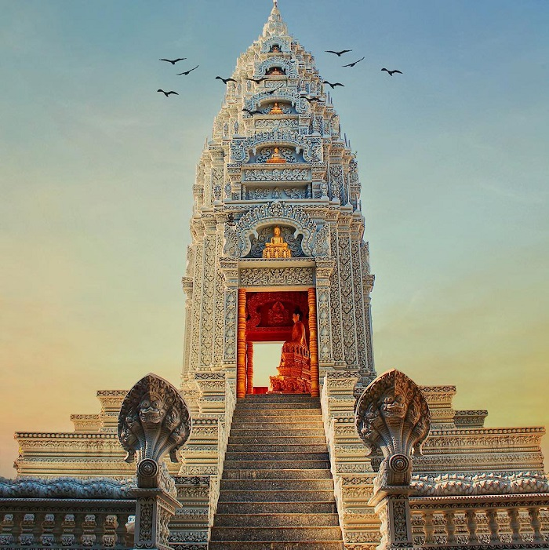
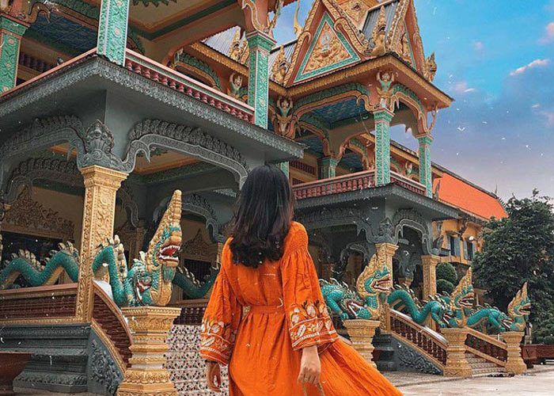
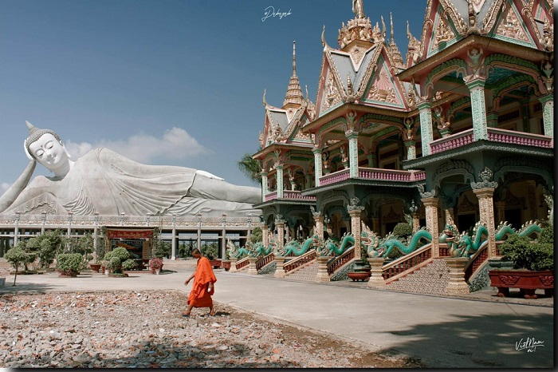
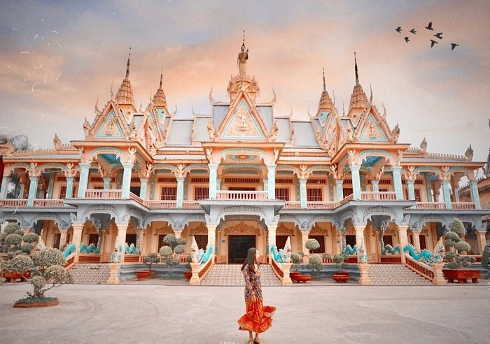

Chùa Som Rong hay còn được gọi với một cái tên khác là chùa Bôtum Vong Sa Som Rong. Chùa tọa lạc tại số 367 đường Tôn Thức Thắng, Phường 5, thành phố Sóc Trăng, cách chùa Kh’leang khoảng 1,7 km. Do nằm trên trục đường chính của thành phố nên việc di chuyển đến đây cũng khá dễ dàng đối với du khách.
Som Rong là một ngôi chùa vô cùng nổi tiếng ở Sóc Trăng. Ảnh: thamhiemmekong.com
Theo lời kể của các vị sư trụ trì, chùa Som Rong Sóc Trăng đã được xây dựng từ cách đây hơn 600 năm. Tuy nhiên, ban đầu chùa chỉ được xây dựng nên bằng tre, gỗ, mái lá đơn sơ và giản dị, nằm cách vị trí của ngôi chùa hiện tại gần 1000 mét, phía bên kia đường. Sở dĩ chùa được gọi là Som Rong là vì trong khuôn viên chùa có rất nhiều cây Som Rong tự sinh sôi và phát triển. Ngoài cây Som Rong, trong chùa còn có rất nhiều hoa Bôtum nữa.
Chùa Som Rong đã có lịch sử hơn 600 năm. Ảnh: leisure-travel.vn
Chùa Som Rong cũng đã trải qua nhiều lần trùng tu sửa chữa. Ảnh: nucuoimekong.com
Chùa Som Rong Sóc Trăng là một quần thể kiến trúc Phật giáo rộng lớn, gồm nhiều công trình khác nhau như : chánh điện, sala, tinh xa, thư viện, bảo tháp,… và đặc biệt phải nói đến bức Tượng Phật Thích Ca nhập niết bàn khổng lồ.
Chùa Som Rong sở hữu lối kiến trúc độc đáo khiến bất cứ ai khi đặt chân đến cũng phải ngỡ ngàng. Ảnh: Yan.vn
Khu chánh điện của chùa được khánh thành vào năm 2000 với quy mô rộng lớn, hoành tráng. Toàn bộ chánh điện được nâng đỡ bởi 6 trụ cột lớn và tầng mái được xây dựng theo kết cấu vô cùng đặc biệt. Hai lối đi vào chánh điện có đặt những bức tượng kỳ lân với vẻ mặt hung tợn, tạo cảm giác uy nghi và trang nghiêm. Tham quan chánh điện, bạn còn có thể hiểu hơn về cuộc đời của Đức Phật thông qua những bức tranh bích họa lớn được vẽ trên các bức tường.
Tòa chánh điện của chùa. Ảnh: luhanhvietnam
Mùa xuân được xem là thời điểm lý tưởng nhất để đến tham quan chùa Som Rong. Lúc này, thời tiết mát mẻ, dễ chịu và cũng là lúc thích hợp để mọi người cầu nguyện cho một năm mới bình an. Nếu bạn đi vào mùa hè thì nên đến vào lúc sáng sớm hoặc buổi chiều vì thời tiết tại Sóc Trăng vào mùa hè rất nóng.